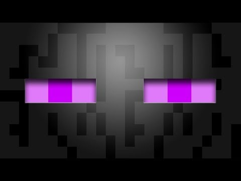
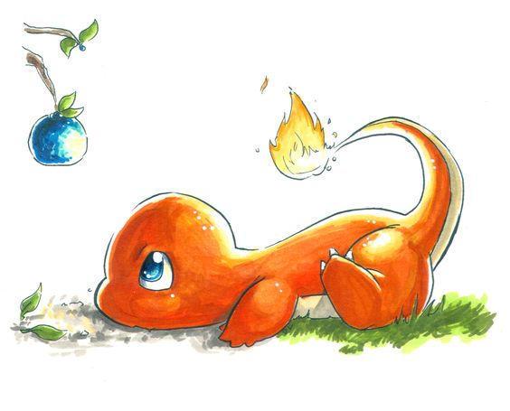
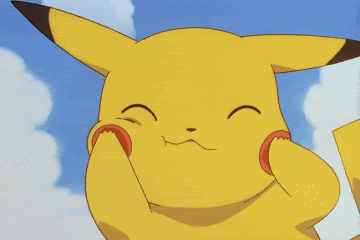

En gang skulle pokemonendermanen på tur i parken. Men pokemonendermanen var selvfølgelig en vill pokemon så den var redd for pokemontrenere etter som de kunne fange ham, og hvis de prøvde å ta ham med pokeballs, brukte den angrepet teleport. Men så ble han selvfølglig en gang fanget av pokemontreneren Ash Ketchum fordi han ville vinne en gymkamp mot en trener som trente psykiske pokemon. Når de var fremme ved gymen utfordret Ash gymlederen som skulle bruke en Abra i kampen. Pokemonendermanen brukte angrepet Endercall og drepte Abraen. Da sende gymlederen ut pokemonen Mewtwo som var den sterkeste pokemonen i kanto, men pokemonendermanen var enda sterkere! Endermanpokemonen brukte Ender call igjen og Mewtwo drepte Enderdragen! Men Mewtwo var nesten død og besvimte i The end og døde. Alle ble glade for at endermanen vant. Snipp, snapp, snute så var var Endermanpokemonen ute.


